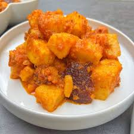

YAM PORRIDGE
home

Description
Yam porridge is a popular West African dish made by cooking yam in a flavorful tomato and pepper sauce. The yams become soft and creamy as they absorb the spices, and palm oil adds color and richness.
It is a filling and comforting meal, often served for breakfast, lunch, or dinner, and can be enjoyed with fish, meat, or on its own.
Ingredients
- 1 medium yam (peeled and cut into cubes)
- 2–3 tomatoes (or 1 can of tomatoes)
- 1 Onion(chopped)
- 1–2 bell peppers or chili (optional)
- Salt
- Seasoning cube
- 1/4 cup palm oil
- Optional: smoked fish, meat, or crayfish for flavor
Steps
- Heat a little oil in a pan and fry the chopped onions until soft.-
- Add chopped tomatoes and peppers, then cook until the mixture reduces and forms a sauce.
- Add the yam cubes and enough water to partially cover them.
- Add salt and seasoning, then cover and cook on medium heat until the yam becomes soft.
- Mash some of the yam slightly to make the porridge creamy.set.
- Stir gently, adjust seasoning, and add optional fish or meat.
- Cook for a few more minutes until everything blends well, then serve hot.